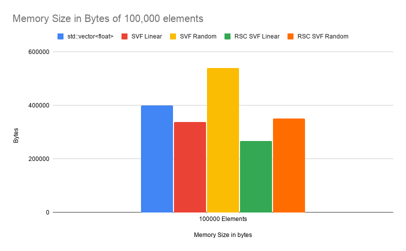
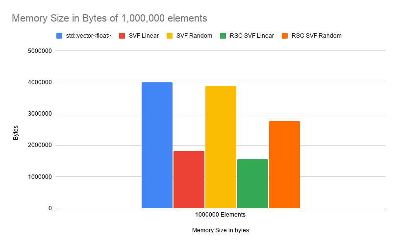
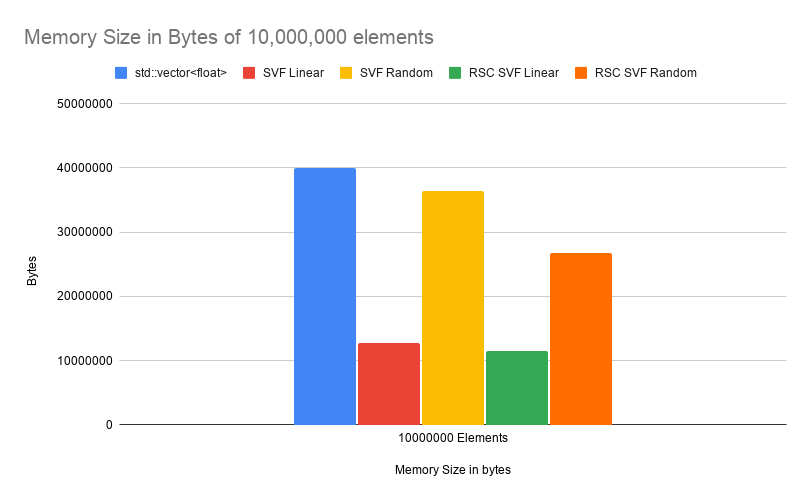
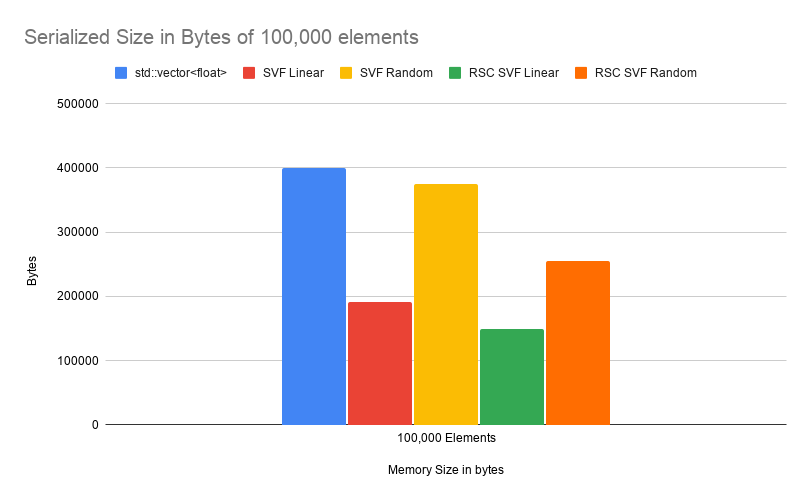
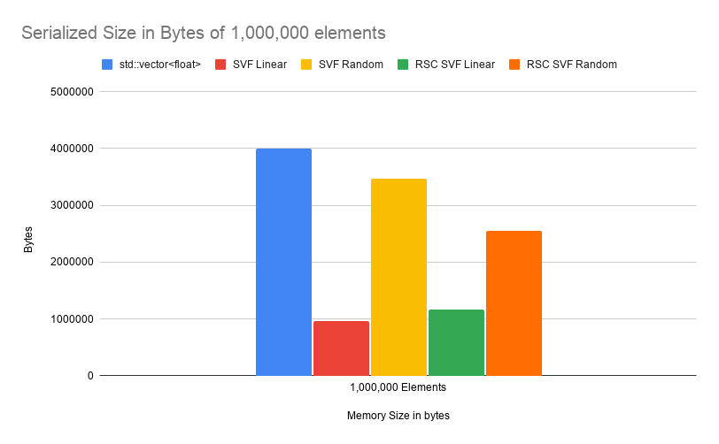
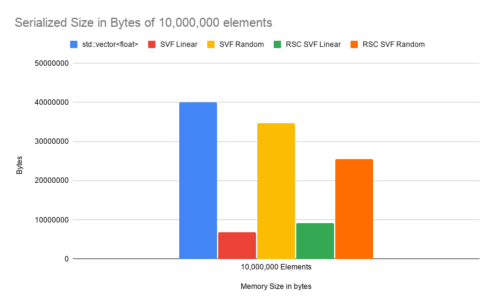
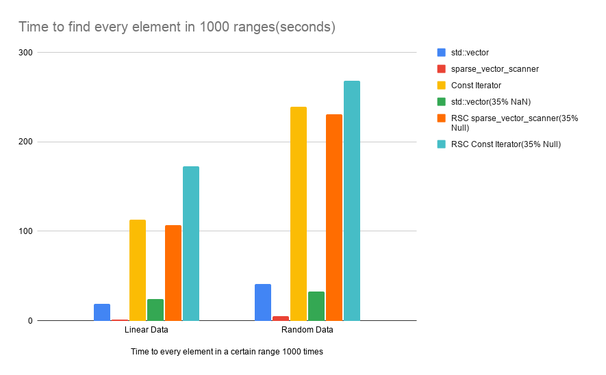

Version 9.1.0
July 3, 2026Release Notes
New Functionality
This update to the BitMagic library adds the sparse_vector_float container, designed to store both sparse and dense floating-point data in a succinct format that reduces memory overhead, with additional compression when serialized to disk. Alongside this new container, the update adds support for serialization and deserialization of this new container, as well as optimized search capabilities integrated directly into the existing sparse_vector_scanner class. Some use cases for a sparse_vector_float include storing geospatial data such as elevations or temperatures, machine learning, sparse graphs, and storing time-series such as financial data.
New Classes
sparse_vector_floatsparse_vector_float_serial_layoutsparse_vector_float_serializersparse_vector_float_deserializer
These are wrapper classes for the sparse vector class type, and allow for the storage of 32-bit floats.
As floats do not have an unsigned version, they cannot be stored in a normal sparse vector. The sparse_vector_float series of classes allows for the storage of these floats by splitting received floats into their sign, exponent, and mantissa. The exponent and mantissa are stored in two sparse vectors, the type of which is given by the user, and the sign is stored in a bit vector of the same type as the given sparse vectors.
This allows for the storage of floats in a single sparse vector object, and instead of the user having to split a float and store it in 3 separate containers themselves, they can instead store it in a single sparse_vector_float object and have operations on that sparse_vector_float affect all 3 inner containers simultaneously.
The sparse_vector_float_serial_layout, sparse_vector_float_serializer, and the sparse_vector_float_deserializer are used for serialization and deserialization of sparse_vector_float objects, and are largely used in the same way as the sparse vector version of the classes.
New Methods
Serialization Routines
sparse_vector_float_serialize()sparse_vector_float_deserialize()
These functions are the same as their sparse vector counterparts but use the sparse_vector_float serializer/deserializer’s
New Methods
sparse_vector_scanner::find_gt_float(Greater Than)sparse_vector_scanner::find_lt_float(Less Than)sparse_vector_scanner::find_ge_float(Greater Than or Equal)sparse_vector_scanner::find_le_float(Less Than or Equal)sparse_vector_scanner::find_range_float(Bounded Range)
These methods allow for a scanner to find the greater than, less than, greater than or equal to, less than or equal to, and a specific range of values in a sparse_vector_float object, allowing easier parsing of sparse_vector_floats.
New Samples
- svfsample01: Basic operations (import, set, get, optimize, etc.)
- svfsample02: Serialization and Const iterator operations
- svfsample03: Range methods (clear, compare, equal, join, merge)
- svfsample04: Extracting from a sparse_vector_float (decode, extract, gather, extract_range)
Performance & Memory Analysis Data
1. In-Memory Sizing Analysis (Bytes)
Calculated via BitMagic's calc_stat::memory_used metrics.
std::vector<float>sparse_vector_floatusing asparse_vector- With Linear data going from -N/2 * .00123 to N/2 * .00123
- With Random data going from -1,000,000 to 1,000,000
sparse_vector_floatusing anrsc_sparse_vectorwith 35% NULL’s- With Linear data going from -N/2 * .00123 to N/2 * .00123
- With Random data going from -1,000,000 to 1,000,000
| Container Configuration | 100,000 Elements | 1,000,000 Elements | 10,000,000 Elements |
|---|---|---|---|
std::vector<float> |
400,024 | 4,000,024 | 40,000,024 |
| SVF Linear | 338,176 | 1,819,648 | 12,703,488 |
| SVF Random | 539,232 | 3,870,464 | 36,430,080 |
| RSC SVF Linear (35% Null) | 266,256 | 1,558,288 | 11,536,280 |
| RSC SVF Random (35% Null) | 351,344 | 2,765,584 | 26,786,576 |



2. Serialized Size (Bytes)
| Container Configuration | 100,000 Elements | 1,000,000 Elements | 10,000,000 Elements |
|---|---|---|---|
std::vector<float> |
400,024 | 4,000,024 | 40,000,024 |
| SVF Linear | 191,310 | 956,513 | 6,890,859 |
| SVF Random | 375,352 | 3,470,964 | 34,693,378 |
| RSC SVF Linear | 149,633 | 1,166,626 | 9,122,900 |
| RSC SVF Random | 254,964 | 2,546,823 | 25,480,286 |



3. Range Query Scan Latency Profile
Search Comparison between Data structures with 10,000,000 elements
- Linear Data
- Data in Data Structures
- 10,000,000 linear elements
- Range of -6150 to 6150 (or -N/2 * .00123 to N/2 * .00123)
- Search Info
- 1000 searches performed on 1000 ranges
- Ranges are 2 random numbers from -6150 to 6150
- Legend
- Linearly search on an std::vector<float>
- sparse_vector_scanner on a sparse_vector_float using a sparse_vector
- Using the Const Iterator of a sparse_vector_float using a sparse_vector
- sparse_vector_scanner on a sparse_vector_float using an rsc_sparse_vector
- Using the Const Iterator of a sparse_vector_float using an rsc_sparse_vector
- Random data
- Data in Data structures
- 10,000,000 random numbers
- Range of -1,000,000 to 1,000,000
- Search Info
- 1000 searches performed on 1000 ranges
- Ranges are 2 random numbers from -1,000,000 to 1,000,000
- Legend
- Same as Linear Data
| Execution Pipeline Model | Linear Data Dataset | Random Data Dataset |
|---|---|---|
std::vector<float> |
18.6000 s | 41.1800 s |
sparse_vector_scanner |
0.8433 s | 5.1880 s |
SVF const_iterator |
112.8000 s | 239.2800 s |
std::vector<float> (35% NaN) |
24.0400 s | 32.9500 s |
RSC sparse_vector_scanner (35% Null) |
106.6200 s | 230.5200 s |
RSC SVF const_iterator (35% Null) |
172.3200 s | 268.3200 s |

Fixes
General
- Fixed type parsing rules for
chrono_taker<>allocations insideperf.cppandt.cppwhere missing template tags caused compilation failures. - Resolved diagnostic warnings across core modules:
bmaggregator.h,bmblocks.h,bmfunc.h,bmserial.h,perf.cpp, andt.cpp. - Updated
CMakeLists.txtto not use-march=nativeby default for non-x86 builds, and to instead use-O2
sparse_vector_scanner<SV>:
- Fixed an error where in the
find_gt_horizontal()method a duplicate of a given bvector was created, but if the given bvector was read only it would copy the read only, causing an error. Changed how it was copying the bvector to usingbit_or()
t.cpp
- Fixed an error in the TestCompressSparseVector() test where in the Compressed load() stress test cmp 3 was testing csv2 instead of csv1
- Fixed an error where in DetailedCheckCompressedDecode() where an assert would fail if given an empty rsc_sparse_vector, despite some tests being an empty rsc_sparse_vector